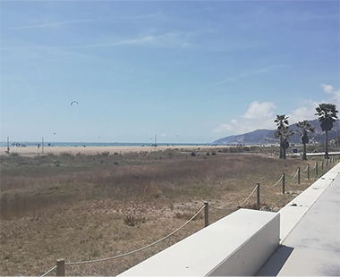
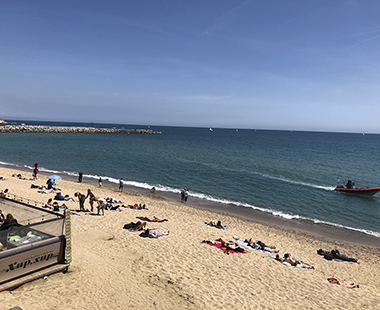
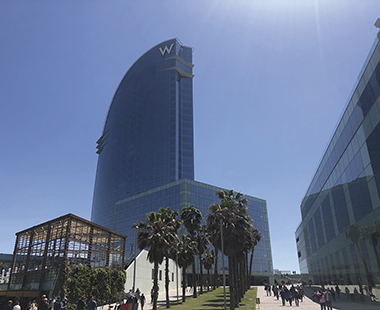

PLATJES
PLATJA DE CASTELLDEFELS

La platja de castelldefels està limitada amb el municipi de Gavà, aquesta platja té 8km de longitud, amb sorra blanca i en alguns trams pot arribar a 90m de ample.
Disposa d’uns servicis com: W.C., dutxes, pasarel·les per a persones amb disminució, zones de joc per a infants, àrees de jocs esportius i tren turístic.Com arribar
BARCELONETA

La platja de la Barceloneta té una longitud d’uns 400m i una amplada de 79m. És la platja més antiga i la més famosa de tota Barcelona.
Disposa d’uns serveis com: àrees de voòlei platja, àrea de jocs i està al costat del hotel més emblemàtic.Com arribar
HOTEL W

L’Hotel Vela el més emblemàtic de Barcelona va ser creat al 2001 per l’arquitecte Ricard Bofill i l´hotel va ser obert al 2009.
L’edifici té una altura de 99m. La torre que té forma de vela on s’ubiquen 473 habitacions i suites, spa, piscines, gimnàs i el restaurant a l’ultima planta.
Com arribar